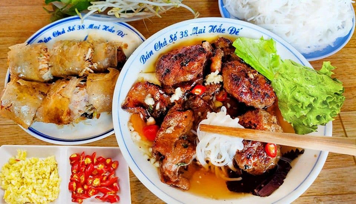

Bun cha ha noi

Nhac den Ha Noi nguoi ta nho ngay den nen am thuc lau doi voi cac mon ngon nhu kem trang tien, com, bun thang, bun oc,... va khong the khong nhac den mon bun cha tru danh, nuc tieng ca trong va ngoai nuoc. Hay cung xach tay vao bep de thuc hien ngay mon an thom ngon nuc tieng nay ngay nhe!
Nguyen lieu can thiet cho mon Bun Cha Ha Noi
- Bun tuoi - 1kg
- Thit ba chi - 700gr
- Thit heo xay nhuyen - 500gr
- Ca rot - 1 cu
- Du du xanh - 1/2 trai
- Rau song cac loai (xa lach/tia to/hung que/hung lui/diep ca)
- Hang tim bam - 1 muong canh
- Toi bam - 1.5 muong canh
- Ot bam - 1 it
- Dau hao - 2 muong canh
- Mat ong - 3 muong canh
- Nuoc mau - 2 muong canh
- Nuoc mam - 1 chen (khoang 220ml)
- Giam - 1/2 chen (khoang 100ml)
- Dau an - 1 it
- Gia vi thong dung - 1 it (muoi/duong/tieu xay/bot ngot)
Cac buoc thuc hien mon Bun cha Ha Noi
-
So che va uop thit
-
So che va uop thit
Doi voi thit ba chi de loai sach bui ban va mui hoi cac ban mang di cha sach voi muoi sau do rua lai voi nuoc lanh va de rao Dung dao cat thit thanh cac mieng mong vua an
- Uop thit voi 1 2 muong canh hanh tim bam 1 2 muong canh toi bam 1 2 muong canh hat nem 1 2 muong canh bot ngot 1 2 muong canh tieu xay 2 muong canh nuoc mam 1 muong canh dau hao 2 muong canh mat ong 1 muong canh nuoc mau sau do tron deu va de cho thit tham gia vi it nhat khoang 30 phut
- Ve phan thit xay cac ban cho 1 2 muong canh hanh tim bam va 1 2 muong canh toi bam 1 2 muong canh hat nem 1 2 muong canh bot ngot 1 2 muong canh tieu xay 1 5 muong canh nuoc mam 1 muong canh dau hao 1 muong canh mat ong 1 muong canh nuoc mau Dung tay tron deu va uop thit khoang 30 phut cho tham gia vi
- Sau khoang 30 phut dung tay lay mot luong thit xay vua du roi vo vien
-
So che cac nguyen lieu khac
-
De loai sach nhua va bui ban ca rot du du khi mua ve cac ban got vo sau do mang ngam voi nuoc muoi pha loang khoang 5 10 phut sau do xa sach lai voi nuoc roi de rao
-
Tien hanh tia hoa cho ca rot sau do cat ca rot va du du lat mong roi cho vao to Cho tiep 1 3 muong canh muoi vao to roi tron deu uop khoang 15 phut sau do rua sach ca rot va du du lai voi nuoc
-
Them tiep 1 5 muong canh duong 1 4 muong canh muoi 1 muong canh giam 1 2 muong canh toi bam vao roi tron deu va uop them 15 phut nua
-
Nuong thit
-
Dung co phet mot lop mong dau an len bep nuong dien xep thit ba chi va thit vien len tren Tien hanh nuong thit den khi chin vang deu 2 mat thi gap ra to
-
Luu yNeu co dieu kien hon thi ban nen nuong thit voi bep nuong than hoa Nhu vay thit se co mui khoi va cang dung chuan hon
-
Nau nuoc mam
-
Bac noi len bep cho vao non 1 chen nuoc mam khoang 200ml non 1 chen duong khoang 200gr 1 2 chen giam khoang 100ml va 2 chen nuoc loc vao va tien hanh nau o lua lon cho cac gia vi tan hoan toan va nuoc mam bat dau soi thi tat bep Nem nem lai gia vi sao cho vua mieng cua gia dinh minh nhe
-
Thanh pham
-
Xep thit nuong bun va rau song ra dia Cho ca rot du du ngam chua va 1 it ot bam ra bat sau do cho nuoc mam duong vua nau vao roi khuay deu la hoan thanh
-
Chi voi vai buoc don gian chung ta da mon bun cha Ha Noi thom lung hap dan chang thua kem ngoai hang Khi an cac ban gap 1 it thit nuong bun va rau thom vao bat nuoc mam roi thuong thuc Thit co vi dam da thom huong cua sa va hanh an cung voi nuoc mam chua ngot rau thom va do chua giup can bang vi giac khien ban cu muon an mai khong ngung Nhanh tay vao bep va lam thu ngay mon nay nhe

Loi ket: vay la chung ta da hoan thanh mon Bun cha Ha Noi, chuc ban ngon mieng!